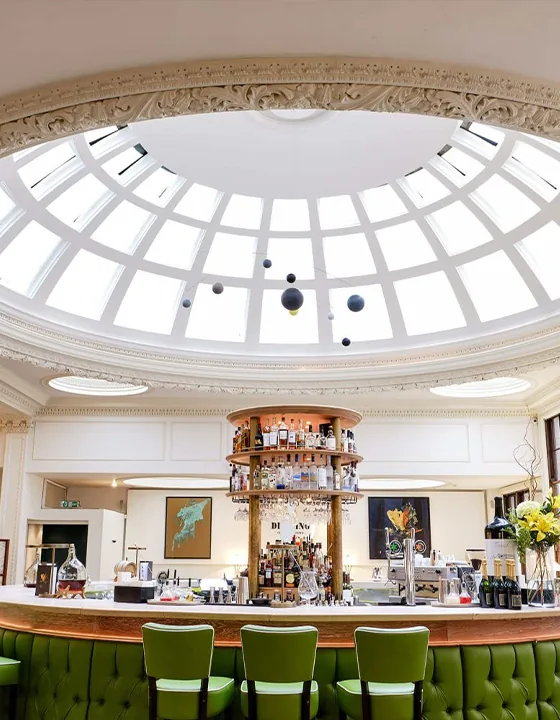

- Home
- Services
- SEO and AI search
- Restaurant SEO
SEO and AI search for restaurants
Rank in Google and Google Maps for the searches diners make, and get named when they ask ChatGPT, Gemini or Perplexity where to eat.
“Restaurants near me” is the most valuable search a restaurant can win.
Most restaurant searches are local and urgent: someone nearby, hungry, deciding where to go tonight. The map results at the top of Google decide who gets that table, and they’re won on your Google Business Profile, your reviews and your website.
AI assistants now answer the same questions, and they lean on the same signals: clear, consistent information about what you serve, where you are and what people say about you. We work on both, and track AI visibility with our own tool, Wonder Score.
Be the answer when they ask an AI where to eat.
What’s included
Google Business Profile
Categories, photos, menu, hours and posts set up to win local searches.
Local rankings
Showing up in the map results for your area and your cuisine.
Menus search can read
Menu pages as text, not PDFs, so search engines and AI understand what you serve.
Reviews
More reviews, better reviews, and replies that show you care.
Consistent listings
The same name, address and details everywhere you’re listed.
AI visibility
Content that answers diners’ questions, tracked with Wonder Score.
In pictures


Are you recommended by AI?
Our own tool shows how often AI assistants recommend you against your competitors, and what to change. How Wonder Score works
Questions
Fixes to your Google Business Profile and listings can show results within weeks. Ranking for competitive searches in a busy area usually takes several months.
The usual causes are an incomplete profile, the wrong categories, few or old reviews, inconsistent details across the web, or simply distance from the person searching. The audit tells you which.
Search engines and AI assistants read them poorly. A menu written as a web page helps them understand what you serve, and is easier to read on a phone.
Yes. The number, recency and rating of reviews, and whether you reply, all play a part in local rankings and in what AI assistants say about you.
Related
SEO and AI search
Get found on Google, and recommended when people ask ChatGPT where to eat.
Find out more →Marketing for restaurants
From Michelin-starred dining rooms to neighbourhood independents.
Find out more →Social media for restaurants
Instagram, TikTok and Facebook run day to day for your restaurant: posts and reels that make people hungry, replies to every comment and message, and reporting tied to covers.
Find out more →Get your free audit
Tell us about your venue and we’ll show you what’s working, what isn’t, and what we’d do first. No charge and no obligation.